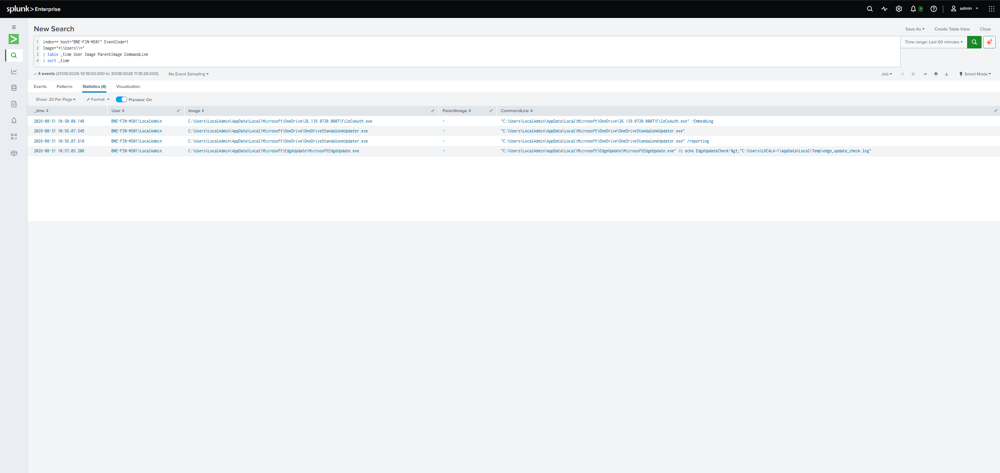
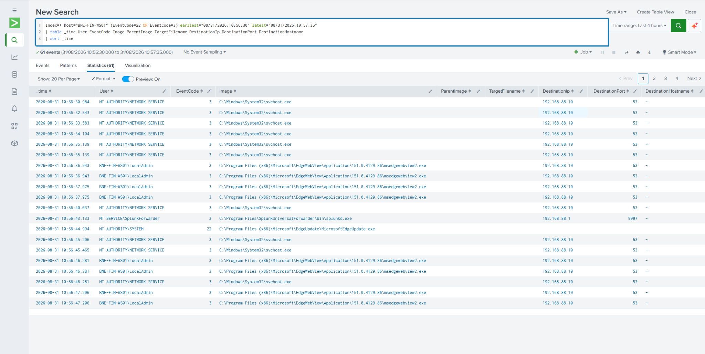
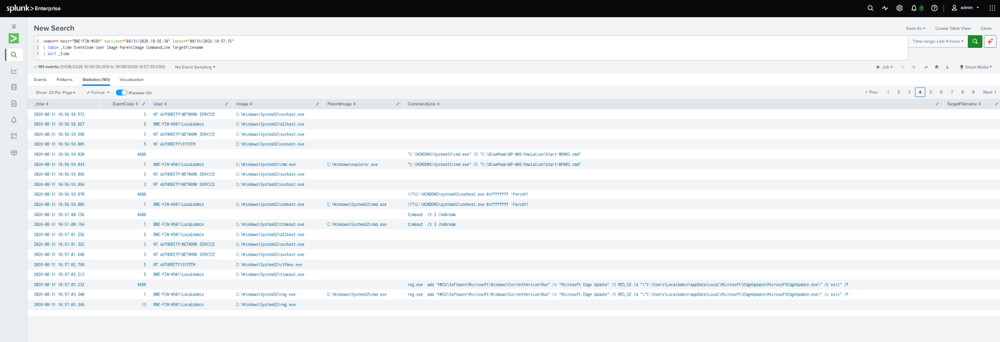
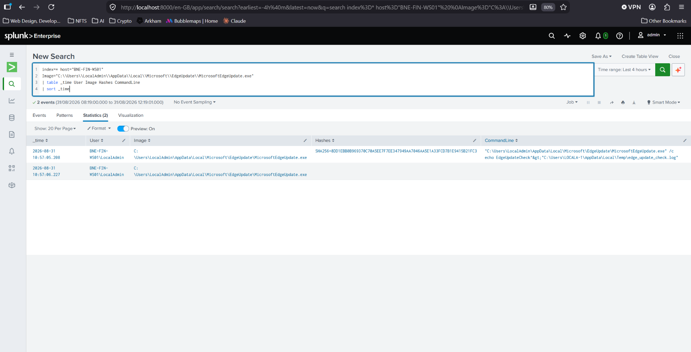
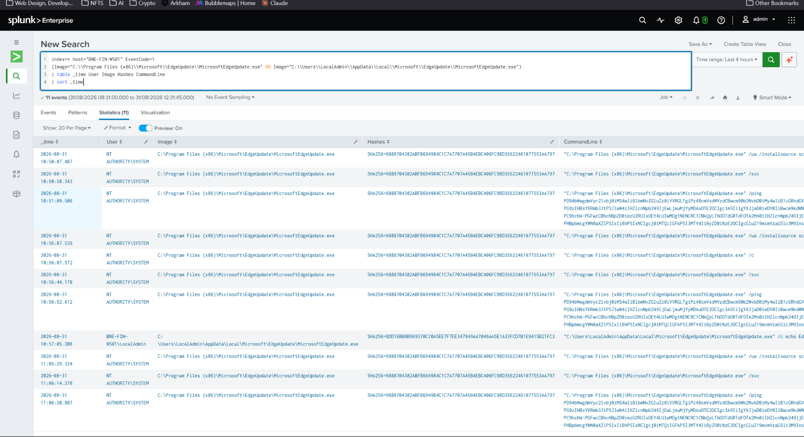

BP-002
Suspicious Persistence and Masquerading
Finance workstation investigation using Sysmon, Windows Security, registry, process, DNS and network telemetry in Splunk.
SUMMARY
Executive summary
A user in the Finance department showed executable activity from MicrosoftEdgeUpdate.exe. Investigation of the surrounding timeline identified a registry Run key and scheduled task referencing an executable in the user's AppData directory, with the scheduled task subsequently executed.
Hash comparison showed that the AppData executable did not match the legitimate Microsoft Edge Update executable located under Program Files. This difference alone is not inherently malicious, but combined with the persistence activity, trusted-looking naming and execution context, the activity was assessed as most likely malicious. No network activity was identified that could be attributed to the suspicious executable.
TIMELINE
Key evidence
HKCU\Software\Microsoft\Windows\CurrentVersion\Run was modified with a value named Microsoft Edge Update referencing the AppData executable.
\Microsoft\Windows\UpdateOrchestrator\EdgeUpdateCheck was created with an ONLOGON trigger and an action referencing the AppData executable.
The newly created EdgeUpdateCheck scheduled task was explicitly run.
C:\Users\LocalAdmin\AppData\Local\Microsoft\EdgeUpdate\MicrosoftEdgeUpdate.exe executed under the LocalAdmin account.
The SHA256 of the AppData executable differed from the Microsoft Edge Update executable located under Program Files (x86).
INVESTIGATION
Key SPL
User-profile process review
index=* host="BNE-FIN-WS01" EventCode=1
Image="*\\Users\\*"
| table _time User Image ParentImage CommandLine
| sort _timeHost timeline
index=* host="BNE-FIN-WS01"
earliest="08/31/2026:10:56:30" latest="08/31/2026:10:57:35"
| table _time EventCode User Image ParentImage CommandLine TargetFilename
| sort _timeDNS and network review
index=* host="BNE-FIN-WS01" (EventCode=22 OR EventCode=3)
earliest="08/31/2026:10:56:30" latest="08/31/2026:10:57:35"
| table _time User EventCode Image QueryName DestinationIp DestinationPort DestinationHostname
| sort _timeExecutable hash review
index=* host="BNE-FIN-WS01" EventCode=1 Image="*\\MicrosoftEdgeUpdate.exe"
| table _time User Image CommandLine Hashes
| sort _timeUser-Profile Process Execution
Process telemetry identified MicrosoftEdgeUpdate.exe executing from the LocalAdmin user's AppData directory rather than the expected Program Files location.

DNS and Network Review
DNS and network telemetry was reviewed around the activity window. Background host activity was observed, but no network connection was attributed to the suspicious AppData executable.

Timeline Reconstruction
A broader host timeline exposed the registry Run-key modification, scheduled-task creation and subsequent task execution that established the suspicious activity chain.

Suspicious Executable Hash
Sysmon process telemetry provided the SHA256 value for the MicrosoftEdgeUpdate.exe executing from the user's AppData directory.

Hash Comparison
Hash comparison showed that the AppData executable did not match the legitimate Microsoft Edge Update executable observed under Program Files (x86). The mismatch strengthened the masquerading hypothesis but was not treated as independently proving maliciousness.

ANALYSIS
Analyst Reasoning
The activity initially appeared similar to legitimate Microsoft updater activity, and normal OneDrive and Edge-related processes were present in the surrounding telemetry. I broadened the investigation around the alert window rather than relying on the initial process hypothesis.
The broader timeline identified a registry Run key and scheduled task both referencing MicrosoftEdgeUpdate.exe within the LocalAdmin user's AppData directory. The scheduled task was then explicitly executed. These persistence mechanisms, combined with the trusted-looking Microsoft naming and user-profile location, significantly increased my suspicion.
I then compared the executable against the Microsoft Edge Update binary observed under Program Files and found that their SHA256 hashes did not match. Although a hash difference alone does not establish maliciousness, the combined behaviour lacked an identified legitimate business explanation. I assessed the activity as most likely malicious and recommended isolation of the workstation while further evidence was gathered.
ASSESSMENT
Disposition and Recommended Actions
Assessment
Behaviour in this case is most likely malicious due to the user context and command telemetry. The executable appears to masquerade as Microsoft Edge Update, with persistence established through a registry Run key and scheduled task using trusted-looking Microsoft naming.
Confidence: 90% malicious / 10% benign.
Recommended Actions
Host isolation is recommended due to the combined persistence and execution activity. Continue gathering evidence including command telemetry, user information, executable information and the complete activity timeline.
MITRE ATT&CK
Technique Mapping
T1036.005 — Match Legitimate Resource Name or Location
The AppData executable used the name MicrosoftEdgeUpdate.exe, closely resembling legitimate Microsoft Edge Update software.
T1036.004 — Masquerade Task or Service
The scheduled task used the trusted-looking path \Microsoft\Windows\UpdateOrchestrator\EdgeUpdateCheck.
T1547.001 — Registry Run Keys / Startup Folder
A value was added beneath the current user's Windows Run key referencing the AppData executable, providing execution at user logon.
T1053.005 — Scheduled Task
A scheduled task with an ONLOGON trigger was created referencing the suspicious executable and was subsequently executed.
T1059.003 — Windows Command Shell
Windows command-shell and system utility execution was observed as part of the activity chain.
LIMITATIONS
Evidence Boundaries
Parent-process information was unavailable for some relevant process events and was treated as a telemetry limitation rather than evidence that no parent process existed. No network activity was identified that could be attributed directly to the suspicious executable. The differing executable hashes strengthened suspicion but did not independently establish maliciousness.
RETROSPECTIVE
Lessons Learned
I did well by taking my time and stepping back to understand the wider context of the activity rather than making a conclusion from a single event. I was able to build a clearer picture by looking at the timeline and comparing the suspicious executable with the legitimate Microsoft Edge updater.
What I could improve is focusing earlier on the most relevant evidence. I spent time investigating activity that turned out to be unrelated and got sidetracked by legitimate OneDrive and network activity. In future investigations, I should think more about the possible chain of events and use the timeline to decide which pivots are most likely to move the investigation forward.
DETECTION ENGINEERING
Detection Improvement
Create a correlated detection for executables launched from user-writable directories that are subsequently configured for persistence through registry Run keys or scheduled tasks. Increase severity when the executable uses trusted-looking Microsoft naming or when persistence points to locations such as AppData or Temp.
This correlation would provide stronger context than alerting independently on every user-profile executable, registry modification or scheduled task, helping analysts prioritise activity where several suspicious behaviours occur together.